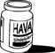

\1\2ğaç\3
Havanın temel bileşeni nedir?

a. Oksijen
b. Karbondioksit
c. Hidrojen
d. Nitrojen
Nitrojen. On iki yaşındaki her çocuğun bildiği gibi nitrojen, havanın yüzde 78’ini oluşturur.
Havanın yüzde 21’inden daha azı oksijendir. Karbondioksitin oranı yalnızca on binde 3’tür.
Nitrojenin havada bu kadar yüksek oranda bulunması, Dünya’nın oluşumu sırasındaki volkanik patlamaların bir sonucudur. Bu sırada büyük miktarda nitrojen atmosfere karıştı. Hidrojen ya da helyumdan daha ağır olan nitrojen, gezegenin yüzeyine daha yakın durumdadır.
76 kg ağırlığındaki bir kişi yaklaşık bir kg nitrojen içerir.
Nitre, güherçilenin (potasyum nitrat) eski adıdır. Barutun kilit bir bileşeni olan potasyum nitrat aynı zamanda etleri tütsülemek için, dondurmada bir koruyucu madde olarak ve hassas dişlere yönelik diş macununda uyuşturucu olarak kullanılır.
Yüzyıllar boyunca güherçilenin en zengin kaynağı, konutlardaki toprak zemine sızmış olan organik malç oldu. 1601’de, “Güherçilecilerin” ahlaksız faaliyetleri, İngiltere’de meclisin gündemine geldi. Bunlar evlere ve hatta kiliselere zorla girip yerleri kazıyor ve içindeki baruttan dolayı toprağı satıyorlardı.
Nitrojen kelimesi Yunancada “soda oluşumu” anlamına geliyor.
Basınca duyarlı plastik kapsül (widget) içeren bira kutularında karbondioksit değil nitrojen bulunur. Küçük nitrojen kabarcıkları, daha yumuşak ve pürüzsüz bir köpük meydana getirir.
Havadaki diğer tek kaydadeğer gaz argondur (yüzde 1).
Argon, William John Strutt (Lord Rayleigh) tarafından keşfedildi. Strutt aynı zamanda gökyüzünün neden mavi olduğunu bulan kişidir.